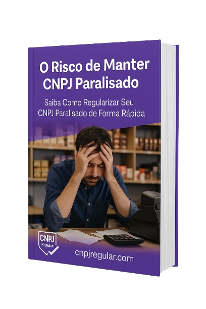

Regularize e mantenha sua empresa em dia por apenas R$ 67/mês e evite multas que podem chegar a milhares de reais!
Regularizar Meu CNPJ AgoraDCTF, ECD/ECF, DEFIS, RAIS e outras declarações devem ser entregues mesmo sem movimento
Livros contábeis devem ser mantidos em ordem conforme o Código Civil
A partir de R$ 200,00 por declaração não entregue, podendo chegar a 20% dos impostos
Bloqueio do CNPJ e CPF dos sócios após 2 anos de omissões
DCTF, ECD/ECF, DEFIS, RAIS, GFIP e todas as obrigações acessórias em dia
Manutenção dos livros obrigatórios conforme exigido por lei
Deixamos seu CNPJ 100% regular perante a Receita Federal
Equipe de contadores experientes à sua disposição
Acompanhamento diário de oportunidades de parcelamento de débitos fiscais
Identificação de programas de refinanciamento com redução de juros e multas
R$ 67/mês é muito menos que uma única multa da Receita Federal
Colocamos seu CNPJ em dia em até 30 dias
Evite bloqueios, multas e problemas futuros
Contadores com mais de 10 anos de experiência
Tudo que você precisa para manter seu CNPJ regular
⏰ Oferta válida apenas para os primeiros 50 clientes
"Estava com meu CNPJ parado há 2 anos e acumulando multas. Em 30 dias eles regularizaram tudo!"
"Serviço excelente! Agora durmo tranquilo sabendo que minha empresa está sempre regular."
"O investimento de R$ 67/mês me poupou milhares em multas. Recomendo!"
Sim! Independente de há quanto tempo seu CNPJ está parado, nossa equipe especializada consegue regularizar sua situação em até 30 dias.
As multas continuam acumulando, seu CNPJ pode ficar inapto, você não consegue emitir certidões e as dívidas podem ser transferidas para seu CPF.
Sim, você pode cancelar a qualquer momento. Mas lembre-se: as obrigações fiscais continuam existindo mesmo com o CNPJ parado.
Entre em contato conosco e resolva sua situação fiscal hoje mesmo